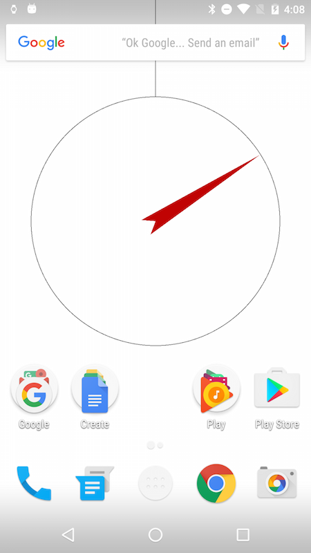

Fondos de Pantalla
El modo Android nos ofrece la posibilidad de desarrollar fondos de pantalla interactivos animados.
¿Qué es un fondo de pantalla animado?
Los fondos de pantalla animado son un tipo especial de apps de Android que generan fondos animados e interactivos en la pantallas de inicio y bloqueo del dispositivo. Técnicamente, son un Servicio de Android, diseñado para ejecutarse sin interrupción en segundo plano. Gracias al modo Android en Processing, no ncesitamos preocuparnos por los detalles técnicos de como se crean y configuran estos servicios y, en cambio, podmeos concentrarnos en el código de dibujo. Virtualmente cualquier bosquejo 2D o 3D se puede ejecutar como un fondo de pantalla animado. Todo lo que necesitas hacer es seleccionar la opción de "wallscreen" en el menú de Android:

Creando un fondo de pantalla
Comencemos escribiendo un fondo de pantalla muy sencillo que sólamente genere una transición contínua entre colores de fomdp seleccionados al azar. Usaremos el modo de color HSB para crear transiciones suaves en el tono y la saturación de colores consecutivos. Podemos probar este bosquejo usando el modo Java primero, para averiguar la sincronización correcta de las transiciones. En nuestra primera versión, simplemente cambiamos el tono y la saturación cada 5 segundos sin ninguna transición:
float currH, currB;
int lastChange = 0;
void setup() {
size(400, 400);
colorMode(HSB, 100);
currH = 100;
currB = 100;
}
void draw() {
background(currH, currB, 100);
if (5000 < millis() - lastChange) {
pickNextColor();
lastChange = millis();
}
}
void pickNextColor() {
currH = random(100);
currB = random(100);
}
Tambiém podemos agregar suavizado para obtener una transición contínua entre los colores:
float currH, currB;
float nextH, nextB;
float easing = 0.001;
int lastChange = 0;
void setup() {
size(400, 400);
colorMode(HSB, 100);
currH = nextH = 100;
currB = nextB = 100;
}
void draw() {
background(currH, currB, 100);
updateCurrColor();
if (5000 < millis() - lastChange) {
pickNextColor();
lastChange = millis();
}
}
void pickNextColor() {
nextH = random(100);
nextB = random(100);
}
void updateCurrColor() {
// Easing between current and next colors
currH += easing * (nextH - currH);
currB += easing * (nextB - currB);
}
Una vez que estemos conformes con la transición y los tiempos de suavizado, debemos reemplazar size(400, 400) con fullScreen() antes de ejecutar el bosquejo en el dispositivo para asegurarnos de que el fondo de pantalla utilice todo el área de la pantalla del dispositivo.
Una vez que se haya instalado el bosquejo del fondo de pantalla en el dispositivo, no se mostrará de inmediato. Necesitamos abrir el selector de fondo de pantalla y buscar nuestro bosquejo entre los demás fondos de pantalla disponibles. El selector de fondo de pantalla se verá diferente según la versión de Android en su dispositivo y qué otros fondos de pantalla están instalados, en Android 5.0 y más recientes debería aparecer como sigue:

Uso de los datos de los sensores en el fondo de pantalla
En el tutorial de sensores vimos cómo utilizar la API del sensores en Android para leer los valores de aceleración. Podemos usar la misma técnica para obtener la información necesaria para implementar una brújula. En este caso, necesitamos datos del sensor geomagnético así como también del acelerómetro para determinar la orientación del dispositivo con respecto al eje magnético de la Tierra. Podemos comenzamos con el siguiente código de base:
import android.content.Context;
import android.hardware.Sensor;
import android.hardware.SensorManager;
import android.hardware.SensorEvent;
import android.hardware.SensorEventListener;
Context context;
SensorManager manager;
SensorListener listener;
Sensor accelerometer;
Sensor magnetometer;
void setup() {
fullScreen(P2D);
orientation(PORTRAIT);
context = getContext();
listener = new SensorListener();
manager = (SensorManager)context.getSystemService(Context.SENSOR_SERVICE);
accelerometer = manager.getDefaultSensor(Sensor.TYPE_ACCELEROMETER);
magnetometer = manager.getDefaultSensor(Sensor.TYPE_MAGNETIC_FIELD);
manager.registerListener(listener, accelerometer, SensorManager.SENSOR_DELAY_NORMAL);
manager.registerListener(listener, magnetometer, SensorManager.SENSOR_DELAY_NORMAL);
}
void draw() {
background(255);
}
void resume() {
if (manager != null) {
manager.registerListener(listener, accelerometer, SensorManager.SENSOR_DELAY_NORMAL);
manager.registerListener(listener, magnetometer, SensorManager.SENSOR_DELAY_NORMAL);
}
}
void pause() {
if (manager != null) {
manager.unregisterListener(listener);
}
}
class SensorListener implements SensorEventListener {
float[] gravity = new float[3];
float[] geomagnetic = new float[3];
float[] I = new float[16];
float[] R = new float[16];
float orientation[] = new float[3];
public void onSensorChanged(SensorEvent event) {
if (event.accuracy == SensorManager.SENSOR_STATUS_ACCURACY_LOW) return;
if (event.sensor.getType() == Sensor.TYPE_MAGNETIC_FIELD) {
arrayCopy(event.values, geomagnetic);
}
if (event.sensor.getType() == Sensor.TYPE_ACCELEROMETER) {
arrayCopy(event.values, gravity);
}
}
public void onAccuracyChanged(Sensor sensor, int accuracy) { }
}
Un par de cosas importantes a tener en cuenta:
- Primero, obtenemos el contexto usando
context = getContext()en lugar degetActivity(), como es el caso de las apps normales, porque hay una actividad principal en el caso de fondos de pantalla, es solo un servicio que sí tiene un contexto. - El mismo detector de eventos se usa para obtener la aceleración y el campo geomagnético, y usamos el valor devuelto por
event.sensor.getType()para determinar de qué sensor estamos recibiendo los valores enonSensorChanged(). - La velocidad para leer los datos del sensor se establece en SENSOR_DELAY_NORMAL , que es la más lenta de todas las velocidades pre-definidas. Es muy importante mantener al mínimo el uso de la batería en fondos de pantalla, ya que se ejecutan en segundo plano constantemente. Por lo tanto, cuando se utilizan sensores en un fondo de pantalla es una buena idea mantener una tasa de actualización lo más baja posible para el propósito de generar el fondo. De hecho, podemos establecer una velocidad específica haciendo:
int READING_RATE = 100000; // time in us sensorManager.registerListener(listener, compass, READING_RATE);
Los vectores de gravedad y geomagnéticos codifican toda la información requerida para determinar la orientación del dispositivo en relación con la superficie de la Tierra. El getRotationMatrix() calcula las matrices de inclinación y rotación, a partir de las cuales podemos obtener la orientación del dispositivo en relación con la dirección del campo geomagnético con getOrientation(). La implementación completa de onSensorChanged() diría:
public void onSensorChanged(SensorEvent event) {
if (event.accuracy == SensorManager.SENSOR_STATUS_ACCURACY_LOW) return;
if (event.sensor.getType() == Sensor.TYPE_MAGNETIC_FIELD) {
arrayCopy(event.values, geomagnetic);
}
if (event.sensor.getType() == Sensor.TYPE_ACCELEROMETER) {
arrayCopy(event.values, gravity);
}
if (SensorManager.getRotationMatrix(R, I, gravity, geomagnetic)) {
SensorManager.getOrientation(R, orientation);
azimuth += easing * (orientation[0] - azimuth);
pitch += easing * (orientation[1] - pitch);
roll += easing * (orientation[2] - roll);
}
}
El último paso es implementar el código de dibujo para la brújula. Una opción sencilla podría ser la siguiente:
void draw() {
background(255);
float cx = width * 0.5;
float cy = height * 0.4;
float radius = 0.8 * cx;
translate(cx, cy);
noFill();
stroke(0);
strokeWeight(2);
ellipse(0, 0, radius*2, radius*2);
line(0, -cy, 0, -radius);
fill(192, 0, 0);
noStroke();
rotate(-azimuth);
beginShape();
vertex(-30, 40);
vertex(0, 0);
vertex(30, 40);
vertex(0, -radius);
endShape();
}
Esto debería darnos como resultado el siguiente fondo de pantalla:

El código completo del bosquejo está disponible aquí.